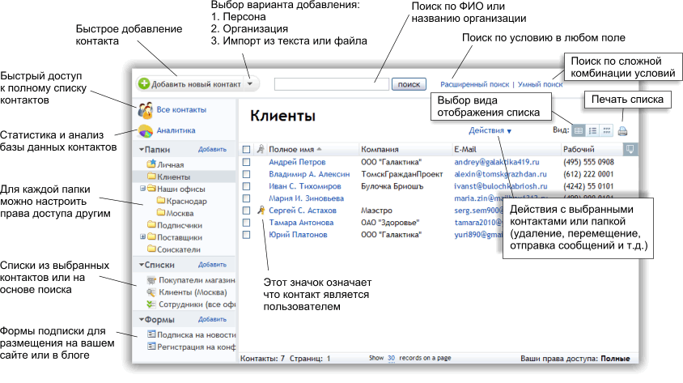

|
Общий вид главного экрана

|
|
|
|
|
Добавление контактовДобавлять контакты можно несколькими способами: |
|
|
Добавление одного контакта- Нажмите на треугольник в правой части кнопки «Добавить новый контакт» и выберите вариант «Персона» и «Компания».
Внимание: страницы добавления персоны и компании содержат различные наборы полей, относящиеся к каждому из из типов контактов. Нажатие на кнопку «Добавить контакт» без использования треугольника с правой части кнопки по умолчанию открывает страницу добавления персоны.
- На открывшейся странице укажите в текстовых полях информацию о контакте. Для успешного добавления контакта заполните обязательные поля «Имя», «Отчество» и «Фамилия» при добавлении персоны и поле «Организация» при добавлении компании.
- Чтобы отобразить поля дополнительных свойств контакта, щелкните мышью по заголовкам соответствующих разделов: «Телефонные номера», «Мгновенные сообщения», «Домашний адрес» и т.д. Для отображения полей всех дополнительных разделов щелкните по ссылке «Показать все поля». Укажите данные контакта в дополнительных полях.
- В нижней части страницы выберите из списка название папки, в которую нужно добавить контакт.
Внимание: у вас должен быть уровень доступа «Запись» или «Полный» к выбранной папке для добавления контакта.
- Завершите создание контакта нажатием на кнопку «Сохранить». Если после добавления контакта вам нужно добавить еще один контакт такого же типа, сохраните данные нажатием на кнопку «Сохранить и добавить еще».
|
|
|
Добавление вручную нескольких контактов- Нажмите на треугольник в правой части кнопки «Добавить новый контакт» и выберите вариант «Импорт контактов».
- На открывшейся странице отметьте пункт «Из текста» и введите в текстовое поле данные новых контактов. Информация о каждом контакте должна находиться в отдельной строке. Данные каждого контакта в пределах строки должны быть разделены запятой. Данные контакта в строке должны следовать в таком же порядке, в каком расположены поля текстовые на странице добавления контакта.
- В нижней части страницы выберите из списка название папки, в которую нужно добавить контакт.
Совет: если до начала импорта была открыта папка, в которую нужно добавить контакты, то нужная папка будет выбрана в списке автоматически.
Внимание: у вас должен быть уровень доступа «Запись» или «Полный» к выбранной папке для добавления контактов.
- Завершите добавление контактов нажатием на кнопку «Импорт».
|
|
|
Импорт из файла- Нажмите на треугольник в правой части кнопки «Добавить новый контакт» и выберите вариант «Импорт контактов».
Отметьте вариант «Импорт из файла» и выберите на своем компьютере файл, содержащий данные контактов. Допускается импортировать CSV-файлы, данные в которых разделены запятой или точкой с запятой, а также адресные книги почтового клиента Outlook. CSV-файл можно создать с помощью табличного редактора OpenOffice.org Calc или Microsoft Excel либо простого текстового редактора. Информация каждого контакта должна находиться на отдельной строке. Чтобы импортировать адресную книгу, необходимо предварительно экспортировать ее из почтовой программы. Для изучения подробностей экспорта адресной книги обратитесь к руководству вашей почтовой программы. - Выберите из списка кодировку импортируемого файла и название папки, в которую нужно добавить контакты из файла.
Совет: если до начала импорта была открыта папка, в которую нужно добавить контакты, то нужная папка будет выбрана в списке автоматически.
Внимание: у вас должен быть уровень доступа «Запись» или «Полный» к выбранной папке для добавления контактов.
- Нажмите на кнопку «Импорт» в нижней части страницы.
- На открывшейся странице отобразится список столбцов, содержащихся в выбранном файле. Выберите в списках над заголовками столбцов поля свойств контактов, в которые нужно импортировать информацию из соответствующих столбцов.
- Если в первой строке импортируемого файла содержатся заголовки столбцов (например, «Имя», «Фамилия», «Номер телефона»), отключите параметр «Импортировать первую строку» под списком столбцов. В противном случае этот параметр следует включить.
- Завершите импорт контактов из файла нажатием на кнопку «Импорт».
|
|
|
Автоматический импорт покупателей из интернет-магазина Shop-ScriptЕсли вы пользуетесь приложением Shop-Script для создания интернет-магазина в своем WebAsyst-аккаунте, то контактные данные всех покупателей автоматически импортируются в список «Store customers». Чтобы просмотреть контактные данные покупателей интернет-магазина, щелкните по названию этого списка в левой части страницы WebAsyst Контактов. Чтобы обновить список покупателей до актуального состояния, выберите в меню «Действия» пункт «Обновить». |
|
|
|
|
Редактирование свойств контактаДанные любого контакта в доступной пользователю папке можно изменить — например, поменять номер телефона или почтовый адрес. Внимание: для изменения свойств контакта необходимо иметь уровень доступа к папке с таким контактом «Запись».
- Для изменения контакта откройте папку или список, в котором он содержится.
- Щелкните мышью по имени контакта.
- На открывшейся странице с подробной информацией о контакте нажмите в правой панели на кнопку «Редактировать» в разделе «Контактная информация».
- В текстовых полях в средней части страницы укажите новые данные и нажмите на кнопку «Сохранить».
|
|
|
Мультиредактирование контактовВместо редактирования нескольких контактов по отдельности удобнее воспользоваться функцией мультиредактирования (множественного редактирования). Мультиредактирование позволяет быстро изменять свойства сразу нескольких контактов на одной странице. Для этого откройте папку, список или страницу просмотра результатов поиска контактов. Затем отметьте контакты, которые необходимо изменить, и выберите в меню «Действия» пункт «Действия с выбранными контактами -> Мульти-редактирование». На открывшейся странице отобразится таблица с полями для редактирования свойств контактов. Укажите желаемые значения в ячейках таблицы. Если какие-то из контактов необходимо удалить, включите параметр «удалить» напротив таких записей. Набор редактируемых полей можно изменять. Для этого щелкните по ссылке «Настроить видимые колонки» в правом верхнем углу страницы. В появившемся окне перенесите нужные поля в список «Видимые поля» и нажмите «Сохранить». Чтобы быстро скопировать одинаковое значение в некоторые поля всех редактируемых контактов, воспользуйтесь ссылкой «Быстрая замена в колонках». Нажатие на ссылку отображает дополнительную область, соответствующую полям контактов в таблице. Введите желаемое значение в одно или несколько полей в этой области и нажмите «Применить» в левой части области. Введенные значения будут скопированы в соответствующие поля всех редактируемых контактов. После изменения свойств контактов нажмите «Сохранить изменения». Внимание: для выполнения мультиредактирования контактов необходимо иметь уровень доступа «Запись» к папкам с такими контактами.
|
|
|
Настройка полей контактовКаждый тип контактов («персона» и «компания») в сервисе WebAsyst Контакты имеет различный набор полей, соответствующий данному типу. Например, для контактов типа «персона» необходимы такие поля, как «Имя», «Фамилия», «Дата рождения», а для компаний важно хранить данные в полях «Наименование», «Имя руководителя», «Номер факса» и т.д. WebAsyst Контакты по умолчанию содержат большое число полей для каждого из этих типов, однако при необходимости вы можете легко добавить собственные поля или изменит существующие. - Чтобы изменить набор полей для одного из типов, откройте страницу добавления или редактирования контакта этого типа, как описано выше в разделах «Добавление одного контакта» и «Редактирование свойств контакта».
- Щелкните по ссылке «Настроить поля» в правой части окна WebAsyst Контактов.
На открывшейся странице отобразится интерфейс настройки разделов (секций) и содержащихся в них полей. Редактирование секций: В свойствах секции можно изменить ее название и расположение относительно других секций. - Чтобы изменить настройки секции, щелкните мышью по ссылке «Редактировать» справа от названия секции (например, «Телефонные номера» или «Мгновенные сообщения»).
- Измените название секции для языков локализации интерфейса, доступных в вашем аккаунте.
- Если необходимо, выберите в списке название другой секции, после которой необходимо расположить изменяемую секцию.
- Нажмите «Сохранить».
Совет: если нужно только изменить расположение секции в общем списке секций, вместо ссылки «Редактировать» воспользуйтесь ссылкой «Переместить».
Добавление новых секций: - Чтобы добавить новую секцию, нажмите на кнопку «Добавить новую секцию» в правой панели.
- В появившемся окне введите название секции. Если необходимо использовать WebAsyst Контакты на нескольких языках, нажмите на ссылку «Добавить название на другом языке» и введите перевод названия.
- Выберите в списке название секции, после которой нужно поместить новую секцию.
- Завершите создание секции нажатием на кнопку «Сохранить».
Редактирование полей: На странице редактирования доступны следующие возможности свойства полей: - «Обязательное»: включение этого параметра делает заполнение поля обязательным при добавлении нового контакта.
- «Редактировать»: изменение наименование поля, тип и размер хранящихся в нем данных.
- «Переместить»: изменения расположения поля относительно других полей, в том числе содержащихся в других секциях.
- «Выключить»: временное отключение возможности ввода или хранения данных в этом поле. Выключение поля удаляет данные всех контактов, хранящиеся в нем. На содержимое других полей этой действие не влияет.
- «Удалить»: полное удаление поля и хранящихся в нем данных всех контактов. На содержимое других полей этой действие не влияет.
Совет: при изменении типа поля, выключении и удалении полей необходимо соблюдать осторожность, в противном случае вы можете потерять ценную информацию без возможности восстановления!
Добавление новых полей: - Чтобы добавить новое поле, нажмите на кнопку «Добавить новое поле» в правой панели.
- В появившемся окне введите название поля. Если необходимо использовать WebAsyst Контакты на нескольких языках, нажмите на ссылку «Добавить название на другом языке» и введите перевод названия.
- Выберите тип данных в списке «Тип поля». Под типом поля укажите дополнительные параметры:
- для типа «Строка» укажите количество символов, которые разрешено вводить в поле;
- для типа «Число» выберите максимальное число символов после запятой, которые допускается хранить в данном поле;
- для типа «Меню» введите несколько значений — по одному в каждой строке; введенные значения будут использоваться в качестве элементов выпадающего списка при добавлении или редактировании контактов.
- Если необходимо, выберите в списке «Поместить после» другое поле, после которого нужно поместить новое поле.
- Завершите создание поля нажатием на кнопку «Сохранить».
|
|
|
Перемещение контактовВнимание: для перемещение контакта из одной папки в другую необходим уровень доступа «Запись» к обеим папкам.
- Чтобы переместить один или несколько контактов в другую папку, откройте папку, список или страницу с результатами поиска и отметьте контакты, которые нужно переместить.
- В меню «Действия» выберите пункт «Действия с выбранными контактами -> Переместить в папку».
- В появившемся окне отметьте папку, в которую нужно переместить выбранные контакты.
- Завершите перемещение нажатием на кнопку «Переместить».
|
|
|
Удаление контактовВнимание: для удаления контакта из папки необходимо иметь уровень доступа «Запись» к этой папке. Удаление контакта из списка не влечет за собой удаление контакта из базы данных — в этом случае меняется лишь содержимое конкретного списка контактов. Для полного удаления контакта необходимо удалить его из папки, в которой он находится.
Удалить запись о контакте можно несколькими способами: Способ 1. - Откройте папку, в которой находится контакт.
- Отметьте удаляемый контакт и выберите в меню «Действия» пункт «Действия с выбранными контактами -> Удалить».
- Подтвердите удаление в диалоговом окне.
Способ 2. - Откройте папку, в которой находится контакт.
- Щелкните мышью по имени контакта, который нужно удалить.
- На открывшейся странице с подробной информацией о контакте щелкните в правой панели в разделе «Контактная информация» по ссылке «Удалить эту персону» либо «Удалить эту организацию» (в зависимости от типа контакта).
- Подтвердите удаление контакта в диалоговом окне.
|
|
|
Поиск контактовВ сервисе WebAsyst Контакты имеется мощный инструмент поиска, позволяющий получить список контактов, удовлетворяющих гибко настраиваемым параметрам выбора. Совет: поиск удобно использовать для формирования динамических списков контактов на основе заданных условий. Для создания списка контактов на основе условий поиска, на странице с результатами поиска выберите пункт меню «Действия -> Сохранить как список». Название вновь созданного список появится в левой навигационной панели в разделе «Списки».
Функция поиска имеет несколько режимов: простой поиск по имени, расширенный поиск и умный поиск. |
|
|
Простой поиск контактов по имениПростой поиск находит: - все персоны, в адресе электронной почты, имени, отчестве или фамилии которых встречаются искомые слова;
- все организации, в названии которых встречаются искомые слова;
- все персоны, которые являются членами таких организаций (компаний).
Окно простого поиска контактов всегда находится в верхней части окна сервиса Контакты. Чтобы выполнить поиск, введите искомое слово в текстовое поле и нажмите кнопку «поиск» или клавишу Enter. |
|
|
Расширенный поискРасширенный поиск находит все контакты, во всех соответствующих свойствах которых содержатся указанные поисковые слова. - Чтобы выполнить расширенный поиск контактов, щелкните по ссылке «Расширенный поиск» рядом с полем простого поиска в верхней части страницы.
- На открывшейся странице введите слова или части слов в текстовых полях, соответствующих свойствам контакта.
- Если необходимо выполнить поиск по дополнительным полям (например, телефонным номерам, домашнему адресу, персональной информации и т.д.), щелкните по соответствующему заголовку и введите поисковый запрос в нужном поле.
- Раздел «Дополнительные условия» позволяет сделать поиск более точным путем указания следующих параметров:
- имя пользователя, добавившего контакт;
- название папки, в которой нужно выполнить поиск;
- дата добавления контакта.
Совет: чем больше полей поиска будет заполнено, тем более точными окажутся его результаты.
|
|
|
Умный поискУмный поиск — это наиболее гибкий режим поиска контактов. Помимо указания поискового слова, он также позволяет выбирать условие И/ИЛИ. - Чтобы выполнить расширенный поиск контактов, щелкните по ссылке «Умный поиск» рядом с полем простого поиска в верхней части страницы.
- На открывшейся странице выберите в первом списке свойство контакта, в котором необходимо выполнить поиск.
- В следующем списке выберите тип совпадения:
- «содержит/точно совпадает/начинается с/не содержит» — в случае поиска по текстовому полю;
- «ранее/точно совпадает/позднее/в интервале» — в случае по дате;
- «больше чем/равно/меньше чем» — в случае поиска числовых значений.
- Введите в текстовое поле параметры поиска:
- текст или число — в случае поиска текстовых или числовых значений;
- выберите дату с помощью встроенного календаря — в случае поиска по дате.
- Если поиск должен выполняться и по другим полям, щелкните мышью по ссылке «добавить условие поиска».
- В появившейся новой строке выберите тип условия «И» либо «ИЛИ» и заполните остальные поля, как описано в шагах 2—5. Если новая строка поиска была добавлена по ошибке, ее можно удалить нажатием на ссылку «удалить» в правой части строки.
Внимание: для всех строк поисковой формы можно выбрать только одинаковый тип условия (И либо ИЛИ).
- Запустите поиск нажатием на кнопку «Поиск» под списком строк с условиями.
|
|
|
Отправка сообщений контактам |
|
|
Отправка электронных сообщений контактамОтправить электронное сообщение любому числу контактов можно непосредственно из окна WebAsyst Контактов без использования WebAsyst Почты. Отправка электронной почты из Контактов лишена некоторых преимуществ сервиса Почта, однако позволяет быстро отослать сообщение средствами простого интерфейса Контактов. - Чтобы отправить электронное сообщение одному или нескольким контактам, откройте папку, список или страницу с результатами поиска контактов.
- Отметьте контакты, которым нужно отправить сообщение.
- В меню «Действия» выберите пункт «Отправить email».
- В открывшемся окне в поле «Кому» появится список электронных адресов всех выбранных контактов. При необходимости отредактируйте список вручную и добавьте желаемые адреса в поля «CC» и «BCC».
- Укажите тему сообщения, с помощью встроенного текстового редактора составьте текст и настройте форматирование сообщения.
- Чтобы прикрепить к сообщению файл, щелкните по ссылке «Прикрепить файл» внизу страницы и выберите файл на своем компьютере.
- Нажмите «Отправить», чтобы отправить сообщение.
|
|
|
Отправка SMS-сообщений контактам- Чтобы отправить SMS-сообщение одному или нескольким контактам, откройте папку, список или страницу с результатами поиска контактов.
- Отметьте контакты, которым нужно отправить сообщение.
- В меню «Действия» выберите пункт «Отправить SMS».
- В открывшемся окне в поле «Кому» появится список номеров, содержащихся в поле «Сотовый телефон» всех выбранных контактов.
- При необходимости отредактируйте вручную список номеров, следуя подсказкам интерфейса.
- Введите текст сообщения в текстовое поле. Обращайте внимание на допустимое число символов при наборе текста.
- Завершите отправку сообщения нажатием на кнопку «Отправить».
|
|
|
Экспорт контактовЛюбой список контактов можно экспортировать в текстовый файл. WebAsyst Контакты позволяют экспортировать списки контактов в файлы формата CSV, фрагменты данных в которых разделены запятой, точкой с запятой или символом табуляции. - Чтобы экспортировать список контактов в CSV-файл, откройте папку с контактами или страницу просмотра всех контактов (путем нажатия на кнопку «Все контакты» в верхней части левой навигационной панели).
- Отметьте контакты, которые нужно экспортировать и выберите в меню «Действия» пункт «Действия с выбранными контактами -> Экспорт».
- В появившемся окне выберите, какие контакты необходимо экспортировать — только выбранные или все контакты в выбранной папке.
- Используйте ниже два списка столбцов, чтобы указать, какие поля и в каком порядке необходимо экспортировать в файл. Поля (столбцы) подлежащие импорту, находятся в левом списке, а поля, исключенные из экспорта — в правом списке.
- С помощью списка «Разделитель между столбцами» выберите символ, который должен использовать для разделения фрагментов данных контактов в пределах каждой строки: запятую, точку с запятой или символ табуляции.
- Завершите экспорт нажатием на кнопку «Экспорт». После нажатия на кнопку откроется диалоговое окно — с его помощью выберите папку на вашем компьютере, в которую нужно сохранить экспортированный файл со списком контактов.
|
|
|
Папки контактовВсе контакты, кроме списка покупателей интернет-магазина, находятся в папках приложения Контакты. Каждый контакт может находиться только в одной папке. Папки организованы в иерархическом порядке, каждая папка (кроме стандартных папок «Личная» и «Общая») может содержать неограниченное количество подпапок. Некоторые папки являются стандартными: «Личная» и «Общая». Стандартные папки нельзя переместить или переименовать. Стандартные папки имеют фиксированные параметры доступа к их содержимому. Содержимое папки «Личная» доступно только пользователю, в чьем аккаунте она находится. Содержимое папки «Общая» всегда доступно всем пользователям аккаунта. Изменять права доступа стандартных папок нельзя. Наличие папки «Личная» в аккаунте пользователя настраивается в правах доступа каждого пользователя. Папку «Общая» можно создать, щелкнув по ссылке «Добавить» в секции «Папки» в левой панели и выбрав в секции «Права доступа» пункт «Общая». Чтобы удалить эту папку, воспользуйтесь пунктом меню «Действия -> Удалить папку "Общая"». |
|
|
Добавление папкиВнимание: для создания новых папок в корне иерархии (т.е. в общем списке с папками «Личная» и «Общая») необходим уровень доступа «Может создавать папки в корне» в настройках прав доступа пользователя. Для создания вложенных подпапок в выбранной папке необходим уровень доступа «Полный» к этой папке.
- Нажмите на ссылку «Добавить» рядом с заголовком «Папки» в левой части окна WebAsyst Контактов.
- В появившемся окне выберите уровень новой папки «Корневая» или «Вложенная». Если вы выберите вариант «Вложенная», новая папка создастся в качестве подпапки внутри открытой в данный момент существующей папки. Выберите уровень доступа из следующих вариантов:
- «Только у меня». В этом случае только вы будете иметь доступ к контактам в данной папке.
- «Совместные». В этом случае доступ к контактам в данной папке будет зависеть от настроек прав доступа пользователей.
- Нажмите на кнопку «Добавить папку» - новая папка появляется в общей иерархии.
- Если в окне добавления папки был выбран вариант «Совместные», откроется страница настройки прав доступа пользователей аккаунта к вновь созданной папке. Отметьте необходимые права доступа — все изменения вступают в силу немедленно.
|
|
|
Переименование папкиВнимание: для переименования папки необходим уровень доступа «Запись» для этой папки.
Чтобы переименовать папку с контактами, откройте ее и выберите в меню «Действия» пункт «Переименовать». В появившемся текстовом поле введите новое название папки и нажмите «Сохранить». Чтобы отказаться от изменения названия, вместо «Сохранить» нажмите кнопку «Отмена». |
|
|
Перемещение папкиЛюбую папку, кроме стандартных, можно переместить внутрь другой папки либо вынести подпапку в корень иерархии на один уровень с папками «Личная» и «Общая». Внимание: для перемещения папки в корень иерархии необходим уровень доступа «Может создавать папки в корне» в настройках прав доступа пользователя. Для перемещения папки внутрь другой папки необходим уровень доступа «Полный» к целевой папке.
- Чтобы переместить папку, откройте ее и выберите в меню «Действия» пункт «Переместить».
- В появившемся окне выберите элемент иерархии, внутрь которого нужно переместить папку. Элементы, которые разрешается выбрать, отображаются черным цветом. Выбор элементов, отмеченных серым цветом, невозможен.
- Если нужно переместить папку внутрь другой папки, выделите курсором название такой папки.
- Если же нужно переместить папку в верхний уровень иерархии, выберите элемент «<корень>».
- Завершите перемещение нажатием на кнопку «Переместить».
|
|
|
Удаление папкиВнимание: для удаления папки в корне иерархии необходим уровень доступа «Может создавать папки в корне» в настройках прав доступа пользователя. Для удаления вложенной подпапки внутри другой папки необходим уровень доступа «Полный» к родительской папке.
- Чтобы удалить папку, откройте ее и выберите в меню «Действия» пункт «Удалить».
- Если вы желаете удалить выбранную папку, подтвердите удаление в диалоговом окне. В противном случае откажитесь от удаления.
|
|
|
Настройка прав доступа к папкеВнимание: чтобы иметь возможность настраивать права доступа к папке, необходимо иметь уровень доступа «администратор» к разделу аккаунта «Команда».
WebAsyst Контакты позволяют быстро настроить доступ других пользователей аккаунта к контактам внутри определенной папки. - Для этого откройте такую папку и в меню «Действия» выберите пункт «Настроить права доступа».
- На открывшейся странице отметьте уровни доступа для всех пользователей аккаунта на вкладке «Пользователи». Для настройки групповых прав доступа перейдите на вкладку «Группы». Выполняемые изменения применяются немедленно.
Уровни прав доступа имеют следующие значения: Чтение — пользователь имеет право просматривать список контактов в папке и свойства каждого из таких контактов.
Запись — пользователь имеет право добавлять контакты в папку, изменять их свойства и удалять контакты из папки, а также создавать вложенные подпапки внутри текущей папки.
Полный — пользователь имеет право удалить или переименовать папку либо переместить ее в другую папку или корень иерархии. Внимание: если пользователь является членом группы, то его индивидуальные права доступа объединяются с правами доступа группы, в которую он входит — в случае расхождения значения в результате используется более высокое.
Например, если группа имеет уровень доступа «Полный», а пользователь — уровень доступа «Чтение», то фактический уровень доступа пользователя, входящего в состав этой группы, будет «Полный». |
|
|
Списки контактовСписок — это коллекция ссылок на различные контакты и/или пользователей. Записи в списке не хранятся. Поэтому удаление списка не влечет за собой удаление контактов или пользователей. Списки удобно использовать для массовых операций с контактами, например, рассылки писем электронной почты (с помощью WebAsyst Контактов и WebAsyst Почты) или отправки массовых SMS-сообщений. В сервисе WebAsyst Контакты можно создавать два списков: статические и динамические. |
|
|
Статические спискиСодержимое статических списков формируется и редактируется вручную, т.е. требует вмешательства пользователя для добавления каждого нового контакта в список и удаления любого контакта из списка. Создание статического списка контактов - Чтобы создать статический список, щелкните по ссылке «Добавить» рядом с заголовком «Списки» в левой части окна Контактов.
- Щелкните по кнопке «Создать статический список».
- В открывшемся окне введите название списка в поле «Придумайте имя для списка».
- В правой части страницы выберите папку, содержащиеся в которой контакты необходимо добавить в список. Чтобы отобразить список контактов из всех папок, выберите элемент «<Все папки>».
- Чтобы добавить контакты из выбранной папки, выделите их курсором и нажмите на кнопку со стрелкой влево. Чтобы удалить из списка контакты, добавленные в него по ошибке, выделите такие контакты в левой части окна и нажмите на кнопку со стрелкой вправо.
Совет: для выделения нескольких контактов щелкайте по ним мышью, держа нажатой клавишу Shift или Ctrl. Клавиша Shift позволяет выбрать диапазон контактов, клавиша Ctrl позволяет выбрать несколько контактов по одному.
- После выбора контактов завершите создание списка нажатием на кнопку «Сохранить».
|
|
|
Динамические спискиСодержимое динамических списков не является фиксированным и зависит от условий, на основе которых создан список. Например, можно создать список контактов, в поле «Домашний адрес» которых указан определенный город; или список контактов, в свойствах которых указан номер мобильного телефона. При добавлении в базу данных новых контактов, удовлетворяющих таким условиям, они будут сразу же автоматически добавляться и в соответствующий список без участия пользователя аккаунта. Создание динамического списка - Чтобы создать динамический список контактов, щелкните по ссылке «Добавить» рядом с заголовком «Списки» в левой части окна сервиса WebAsys Контакты.
- В разделе «Список основанный на результатах поиска» отметьте один из следующих вариантов и нажмите кнопку «Создать список на основе поиска»:
- «Поиск по имени персоны или названию организации»;
- «Расширенный поиск по любому полю»;
- «Умный поиск, основанный на комбинации различных условий».
- В открывшемся окне введите название списка в поле «Придумайте имя для списка».
- Используйте форму поиска для выбора контактов, которые необходимо включить в список.
- Завершите создание списка нажатием на кнопку «Сохранить». Список контактов, удовлетворяющих условиям поиска, отобразится после обновления страницы.
|
|
|
Общий доступ к спискам
Пользователи приложения Контакты с уровнем доступа «администратор» могут предоставлять другим пользователям права доступа для чтения к любому списку контактов. Такой список виден всем пользователям приложения Контакты, а его название помечается буквой «а» в перечне списков — от слова «администратор». Возможность редактирования контактов в списке с общим доступом имеется только у тех пользователей, которые и раньше имели возможность редактирования этих контактов. Ко всем остальным контактам в списке предоставляется доступ только для чтения. Дать доступ к списку контактов другим пользователям можно двумя способами: - Откройте список, перейдите в меню «Действия» и отметьте пункт «Дать доступ к этому списку другим пользователям (только по чтению)».
- Если список статический, откройте его, перейдите в меню «Действия», отметьте пункт «Редактировать», на открывшейся странице включите параметр «Дать доступ к этому списку другим пользователям (только по чтению)» и нажмите «Сохранить».
|
|
|
|
|
Формы подпискиФорма подписки — это веб-форма, публикуемая на любом интернет-сайте или блоге, с помощью которой посетители сайта могут самостоятельно добавлять свою контактную информацию в вашу базу данных сервиса WebAsyst Контактов. Для использования формы подписки ее необходимо создать, настроить и опубликовать на интернет-сайте или в блоге, как описано далее. |
|
|
Создание формы подписки- Чтобы создать форму подписки, щелкните по ссылке «Добавить» рядом с заголовком «Формы» в левой навигационной панели.
- В появившемся окне введите в текстовое поле «Название формы» удобное для вас наименование, с помощью которой будет удобно отличать эту форму от других.
- В выпадающем списке под текстовым полем выберите папку, в которую будут добавляться контакты с данными подписчиков, которые воспользуются этой формой.
- В следующем выпадающем списке выберите тип, который должен использоваться для создания контактов с помощью этой формы подписки: «персона» или «компания».
- Завершите создание формы нажатием на кнопку «Создать форму».
После создания новой формы подписки откроется страница настройки параметров этой формы. |
|
|
Настройка формы подписки- Чтобы настроить форму подписки, щелкните по ссылке «Настройка» под названием формы в верхней части страницы.
- На вкладках страницы настроек отметьте следующие параметры настройки:
- «Поля»: выберите поля, которые должны будут заполнить посетители интернет-сайта или блога.
- «Папка и списки»: выберите папку и списки, в которые должны добавляться контакты с данными подписчиков.
- «Вид»: настройте цвета оформления, заголовок, шрифты, надпись на кнопке и язык, на котором должны отображаться надписи формы.
- «После отправки»: настройте поведение формы после того, как подписчик введет свои данные и нажмет на кнопку отправки:
- «Остаться на странице формы и показать сообщение»: введите текст сообщения, который необходимо отображать;
- «Перейти на другую страницу»: введите адрес (URL), который должен открыться в браузере подписчика; при необходимости включите параметр
- «Открыть в новом окне» - в этом случае введенный здесь адрес откроется в новом окне/вкладке браузера подписчика;
«Отправить письмо подписчику»: укажите имя, адрес отправителя и текст письма, которое будет автоматически отправляться каждому подписчику, который введет правильный адрес электронной почты в соответствующее поле формы; для добавления в текст письма ссылки управления подпиской щелкните по соответствующей ссылке под окном текстового редактора. Ссылка управления подпиской позволяет подписчику открыть в браузере открыть специальную страницу (личный кабинет подписчика) и с ее помощью изменить ранее введенную контактную информацию, отказаться от почтовых рассылок в его адрес из вашего аккаунта, а также удалить свою информацию из базы данных вашего аккаунта.
- Для завершения настройки нажмите на кнопку «Сохранить изменения».
|
|
|
Публикация формы подпискиДля эффективного использования формы подписки по назначению необходимо разместить ее на популярном интернет-ресурсе. Это можно сделать с помощью сервиса WebAsyst Контакты несколькими различными способами. Чтобы приступить к публикации формы подписки, откройте страницу просмотра формы. Для этого щелкните по названию формы подписки под заголовком «Формы» в левой навигационной панели. Размещение ссылки на форму подписки Скопируйте адрес (URL) формы подписки из текстового поля «Ссылка на эту форму» и разместите его на сайте, создав гиперссылку по правилам HTML. При переходе по ссылке посетитель сайта попадет на новую страницу, на которой будет отображаться только форма подписка. Использовать этот способ рекомендуется только для проверки работы формы. Размещение тега IFRAME Скопируйте содержимое текстового поля «Метод 1 (<iframe>)» и добавьте его в HTML-код веб-страницы. Форма подписки в этом случае будет отображаться среди остального содержимого веб-страницы. Этот способ публикации может оказаться недоступным для веб-порталов, не допускающих использование HTML-тега IFRAME. Использование тега FORM и JavaScript Скопируйте содержимое текстового поля «Метод 2 (javascript и <form>)» и добавьте его в HTML-код веб-страницы. Форма подписки в этом случае будет отображаться среди остального содержимого веб-страницы. Публикация в TypePad и iGoogle Если у вас есть аккаунт в онлайн-сервисах TypePad или iGoogle, щелкните по соответствующей ссылке в правой части страницы, авторизуйтесь в аккаунте онлайн-сервиса и следуйте инструкциям. |
|
|
АналитикаДля просмотра статистической информации обо всех контактах в базе данных аккаунта в сервисе WebAsyst Контакты имеется раздел «Аналитика». - Для просмотра статистической информации о контактах нажмите на кнопку «Аналитика» в верхней части левой навигационной панели.
- На открывшейся странице появится информация о базе данных контактов вашего аккаунта в виде нескольких таблиц:
- «Типы контактов»: эта таблица содержит количество контактов каждого из имеющихся типов («персона» и «компания»). Для просмотра списка контактов каждого типа щелкните по ссылке с числом контактов.
- «Заполненность полей»: эта таблица содержит перечень всех полей всех типов контактов и число контактов, в свойствах которых имеется значение каждого из полей. Для просмотра всех контактов, в свойствах которых заполнено данное поле, щелкните по ссылке с числом контактов напротив названия поля. Для просмотра списка уникальных значений данного поля щелкните по ссылке «показать уникальные».
- «Добавленные пользователями»: эта таблица содержит число контактов, добавленных каждым из пользователей аккаунта. Для просмотра списка контактов, добавленных каким-либо пользователем, щелкните ссылке с числом контактов напротив имени пользователя.
- «Подписчики»: в этой таблице содержится статистическая информация о подписчиках, воспользовавшихся формами подписки, созданными пользователями аккаунта. Для просмотра списка подписчиков в каждом разделе таблицы щелкните по ссылке с числом подписчиков в этом разделе.
|
|